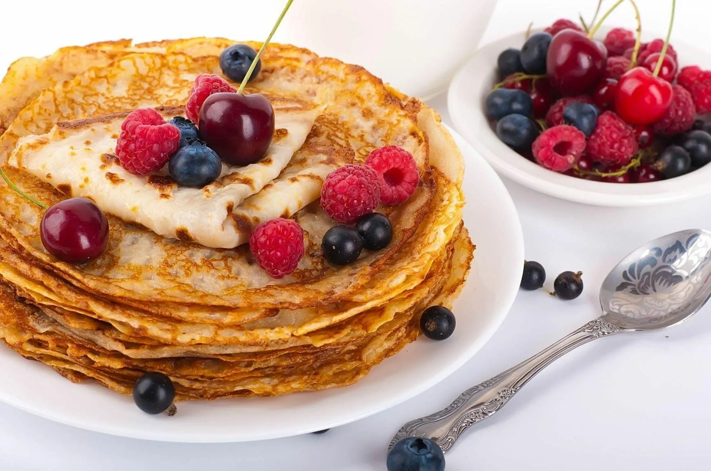

Блины
Блины — это традиционное русское блюдо, представляющее собой тонкие круглые лепёшки, приготовленные из теста на основе молока, муки, яиц и масла. Блины являются важной частью русской кухни, особенно популярны на Масленицу.
Описание блюда
Блины готовятся на сковороде и могут быть как сладкими, так и несладкими. Они могут быть поданы с различными начинками, такими как мясо, творог, икры, а также с мёдом, вареньем или сметаной. В русской традиции блины символизируют солнце и часто подаются на праздниках, таких как Масленица.
Рецепт блинов
Вот простой рецепт для блинов:
- В глубокой миске взбиваем яйца, добавляем молоко и муку, а затем постепенно вводим воду, чтобы тесто получилось жидким, но не слишком. Добавляем щепотку соли и немного сахара.
- Разогреваем сковороду с небольшим количеством масла и выливаем тесто, равномерно распределяя по поверхности сковороды.
- Когда блин подрумянится с одной стороны, переворачиваем его на другую и обжариваем ещё пару минут.
- Готовые блины выкладываем на тарелку, а перед подачей можно смазать их маслом или подавать с начинкой по вкусу.